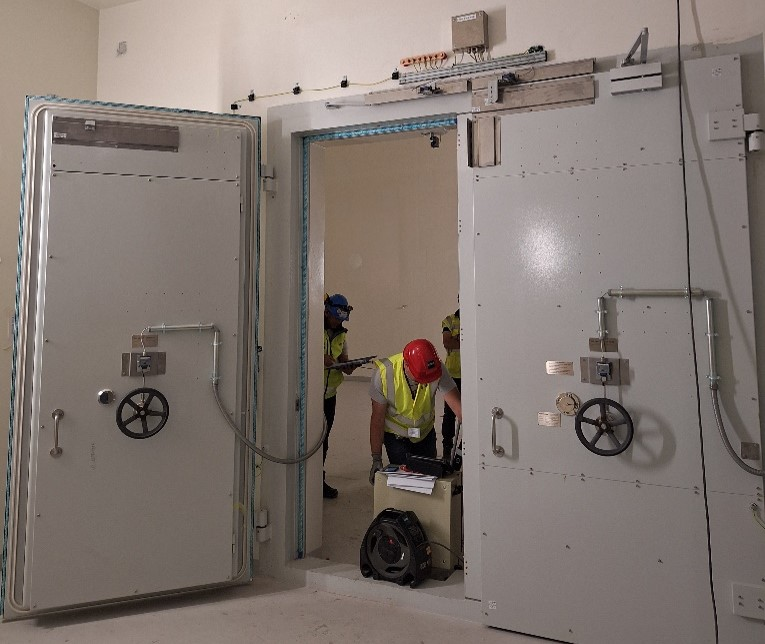
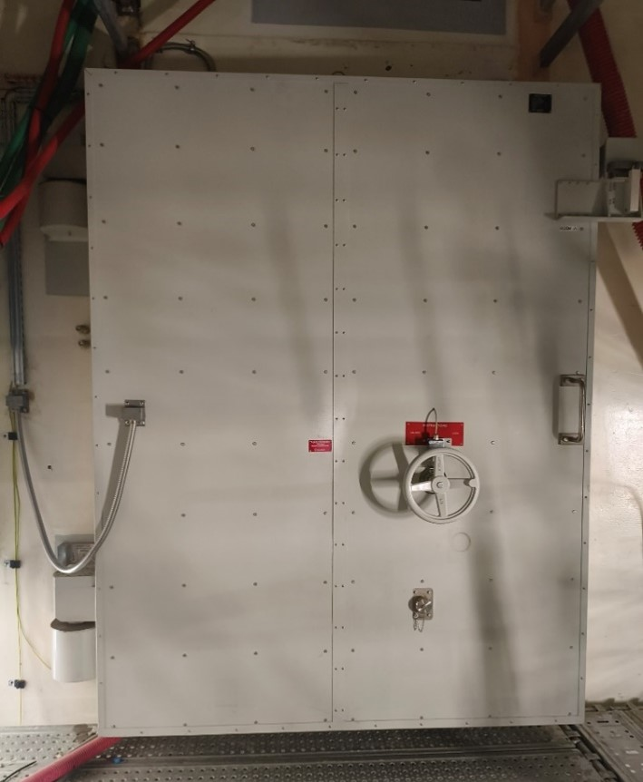
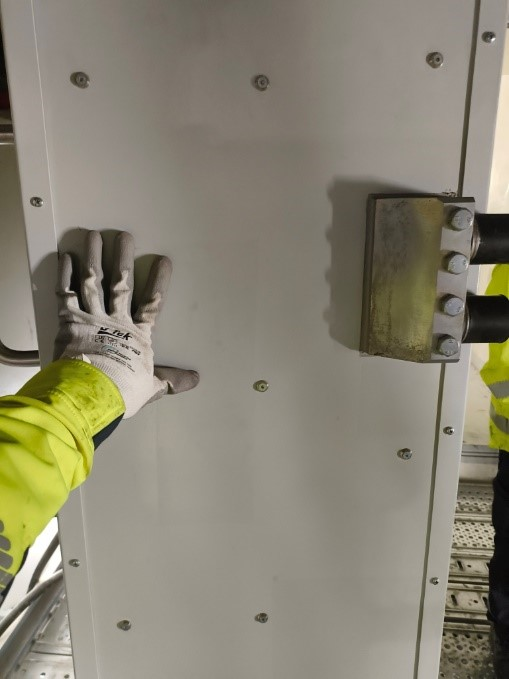
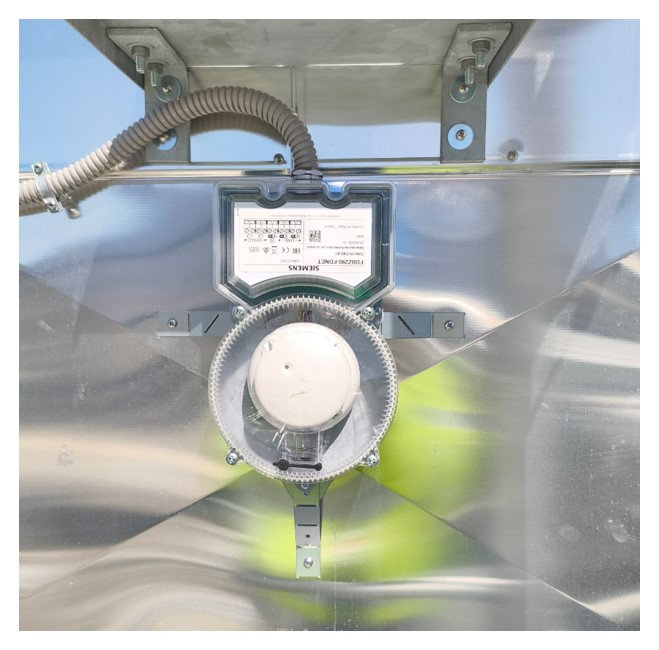

Mon stage de 2nd année de BUT
Intitulé de stage : Participation aux essais et mise en service des systèmes électriques et communications des nouveaux bâtiments d'ITER
Au cours de mon stage en tant qu'assistant ingénieur essais et mise en service, j'ai participé à la vérification, à la validation et à la mise en service des systèmes électriques, de communication et de gestion technique des nouveaux bâtiments du projet ITER. Mes principales réalisations techniques incluent : Réalisation d'essais fonctionnels sur les installations électriques, nottament des portes nucléaires et sur les systèmes Building Managment Systèmes afin de vérifier leur conformité aux exigences du client européen, Fusion For Energy. J'ai également participé au contrôle du bon fonctionnement des utilités des bâtiments : éclairage, détection incendie, HVAC, réseaux de communication, automates et infrastructures associées. En participant au Site Acceptance Test, incluant la préparation, l'exécution et la validation des tests de réception sur site. Puis j'ai participé à l'analyse et au traitement des anomalies détectées lors des essais : identification des défauts, rédaction des réserves, suivi des corrections avec les sous-traitants. Ainsi j'ai pu contribuer au processus de transfert des modules de la construction vers les équipes de Test & Commissioning, garantissant la conformité des installations avant leur raccordement au système central de supervision.



